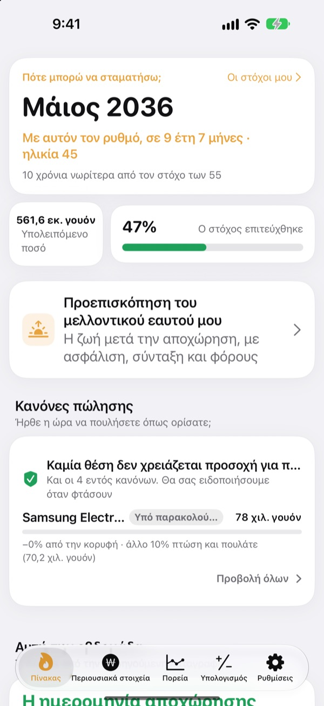
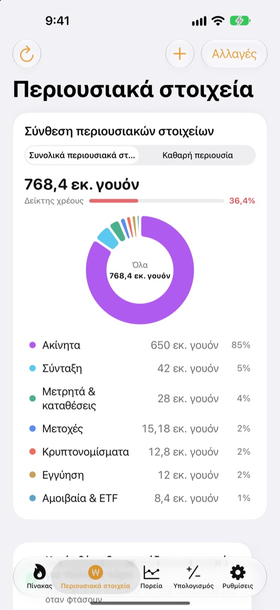
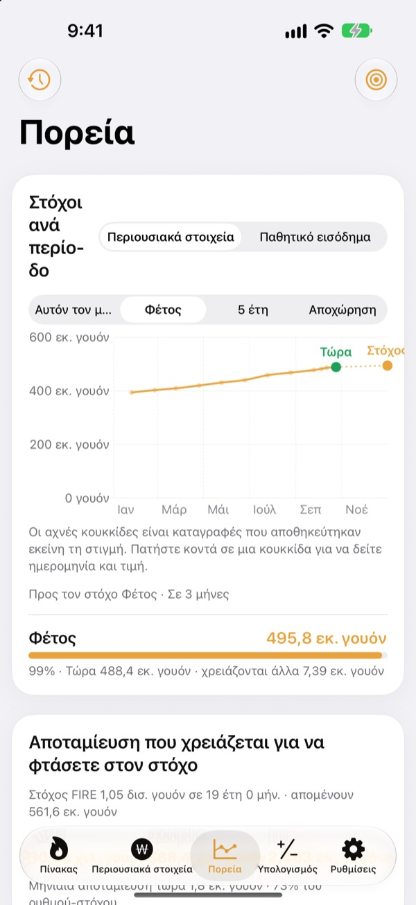
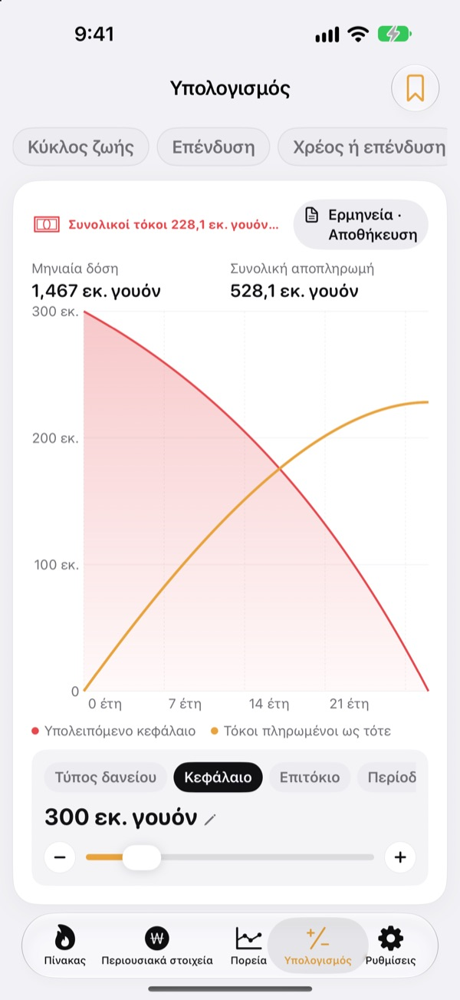

Πότε μπορείτε να φύγετε;
Με αριθμούς, όχι με το μάτι.
Βάλτε πόσα ξοδεύετε και πόσα έχετε μαζέψει και θα δείτε τον μήνα που μπορείτε να φύγετε. Κάθε φορά που αλλάζει η περιουσία σας, βλέπετε αν η ημερομηνία πλησίασε ή απομακρύνθηκε.
Χωρίς λογαριασμό. Οι καταγραφές σας μένουν στη συσκευή σας.

Βρείτε την ημερομηνία αποχώρησής σας
Σύρετε τα ρυθμιστικά. Είναι ο ίδιος υπολογισμός που κάνει η εφαρμογή στην πρώτη της οθόνη.
Ακόμα κάνετε τον λογαριασμό "μπορώ να φύγω;" με το μυαλό;
Όταν τράπεζα, χρηματιστηριακός λογαριασμός, σύνταξη και εγγύηση ενοικίου βρίσκονται σε διαφορετικά σημεία, θολώνει ακόμα και το σύνολο, και η ημερομηνία αποχώρησης μένει μια εικασία. Το Toesagak τα φέρνει όλα σε μία οθόνη και ξαναϋπολογίζει συνεχώς από αυτό το σύνολο τον μήνα που μπορείτε να φύγετε.
Όλη η περιουσία σε μία οθόνη
Ακίνητα, μετοχές, αμοιβαία κεφάλαια και ETF, συντάξεις, μετρητά και καταθέσεις, εγγυήσεις, κρυπτονομίσματα και δάνεια, ομαδοποιημένα ανά τύπο, με συνολικό ενεργητικό, καθαρή θέση και δείκτη χρέους.
Οι τιμές μετοχών και κρυπτονομισμάτων φέρνονται αυτόματα ώστε οι αξίες να είναι επίκαιρες, και ένα στιγμιότυπο οθόνης από την εφαρμογή του χρηματιστή σας περνά θέσεις και αξίες μονομιάς.

Πόσα τη μέρα ως τον στόχο
Δείτε τους στόχους για αυτόν τον μήνα, φέτος, την πενταετία και τη σύνταξη μαζί με τις προηγούμενες καταγραφές σας σε ένα γράφημα. Σας λέει επίσης πόσα να αποταμιεύετε τη μέρα, την εβδομάδα ή τον μήνα για να μείνετε στον δρόμο σας.
Όταν αλλάζει η περιουσία σας, η καταγραφή της εβδομάδας αποθηκεύεται αυτόματα, έτσι το ιστορικό χτίζεται μόνο του.

Κάντε τον λογαριασμό πριν από τις μεγάλες αποφάσεις
Υπολογιστές για την πορεία της περιουσίας σε όλη τη ζωή, επενδύσεις, αποπληρωμή χρέους ή επένδυση, δάνεια, αποταμίευση και καταθέσεις, αγοραστική δύναμη του μισθού και μετατροπή χρημάτων σε ώρες. Σύρετε μια τιμή και το γράφημα ξανασχεδιάζεται, με την προηγούμενη καμπύλη να μένει διακεκομμένη για σύγκριση.
Δώστε όνομα και αποθηκεύστε τις ρυθμίσεις στις οποίες επιστρέφετε.

Τρία βήματα για να ξεκινήσετε
- 1
Βάλτε έξοδα και ηλικία
Αρκούν πρόχειροι αριθμοί. Η ημερομηνία αποχώρησης εμφανίζεται αμέσως.
- 2
Προσθέστε την περιουσία σας
Όσο πιο αναλυτικά, τόσο πιο ακριβής η ημερομηνία.
- 3
Ρίχνετε μια ματιά πού και πού
Οι εβδομαδιαίες καταγραφές μαζεύονται μόνες τους, και η εφαρμογή μπορεί να σας το θυμίζει την 1η κάθε μήνα.
Πώς υπολογίζει η εφαρμογή
- Στόχος
- Έξοδα ενός έτους μετά την αποχώρηση ÷ ασφαλής ρυθμός ανάληψης (στο 4%, έξοδα 25 ετών)
- Ημερομηνία αποχώρησης
- Ο μήνας που η καθαρή θέση, μαζί με όσα αποταμιεύετε κάθε μήνα και με την αναμενόμενη απόδοση, φτάνει τον στόχο
- Συνολικό ενεργητικό
- Όλα όσα έχετε, μαζί
- Καθαρή θέση
- Συνολικό ενεργητικό μείον χρέη, όπως δάνεια
- Πρόοδος
- Καθαρή θέση ÷ στόχος. Μπορείτε να την παρακολουθείτε και με βάση το παθητικό εισόδημα
- Τι μπορείτε να αλλάξετε
- Μηνιαία έξοδα, ρυθμό ανάληψης από 2 έως 6%, αναμενόμενη απόδοση από 0 έως 12%, την ηλικία που θέλετε να σταματήσετε
Όλα τα αποτελέσματα είναι ενδεικτικοί υπολογισμοί με βάση όσα εισαγάγετε και δεν αποτελούν επενδυτική συμβουλή.
Ερωτήσεις
Πού αποθηκεύονται οι καταγραφές μου;
Μόνο στη συσκευή σας. Δεν υπάρχει εγγραφή και τίποτα δεν στέλνεται στον προγραμματιστή. Ενεργοποιήστε τον συγχρονισμό iCloud στις Ρυθμίσεις για να βλέπετε τις ίδιες καταγραφές σε iPhone και iPad μέσω του δικού σας λογαριασμού iCloud.
Οι τιμές δεν ενημερώνονται.
Οι αμερικανικές και κορεατικές μετοχές, τα κρυπτονομίσματα και οι ισοτιμίες λειτουργούν χωρίς ρυθμίσεις. Ελέγξτε τη σύνδεσή σας στο διαδίκτυο και ότι το σύμβολο ή ο κωδικός είναι σωστός. Οι τιμές διαμερισμάτων βασίζονται σε δημόσια κορεατικά δεδομένα ακινήτων και χρειάζονται κλειδί υπηρεσίας στις Ρυθμίσεις.
Ποια η διαφορά συνολικού ενεργητικού και καθαρής θέσης;
Το συνολικό ενεργητικό είναι όλα όσα έχετε, μαζί. Η καθαρή θέση είναι αυτό μείον τα χρέη, όπως δάνεια. Η ημερομηνία αποχώρησης υπολογίζεται από την καθαρή θέση.
Πώς μεταφέρω τις καταγραφές μου σε νέα συσκευή;
Με την Εξαγωγή στις Ρυθμίσεις φτιάξτε ένα αρχείο αντιγράφου ασφαλείας, κρατήστε το στα Αρχεία, στο iCloud Drive ή σε email και επαναφέρετέ το στη νέα συσκευή. Τα αντίγραφα δεν περιέχουν ποτέ κλειδιά API. Η εφαρμογή κρατά επίσης αυτόματα στη συσκευή τα 20 πιο πρόσφατα αντίγραφα.
Πώς λειτουργούν οι ειδοποιήσεις πώλησης;
Για κάθε θέση ορίστε πόσο μπορεί να πέσει από την κορυφή ή μια τιμή στόχο. Όταν η τιμή περάσει αυτό το όριο, ειδοποιείστε. Στην άνοδο η εφαρμογή δεν ενοχλεί. Οι τιμές ελέγχονται όταν ανοίγετε την εφαρμογή και όταν το επιτρέπει το iOS στο παρασκήνιο (συνήθως κάθε λίγες ώρες), άρα δεν πρόκειται για παρακολούθηση σε πραγματικό χρόνο.
Μπορώ να κρατήσω τους αριθμούς μου ιδιωτικούς;
Ενεργοποιήστε το Κλείδωμα εφαρμογής στις Ρυθμίσεις για να ανοίγει με Face ID ή κωδικό. Με το κλείδωμα ενεργό, ούτε η μηνιαία υπενθύμιση δείχνει αριθμούς.
Μπορώ να ρίξω πρώτα μια ματιά;
Ενεργοποιήστε τα Δεδομένα επίδειξης στις Ρυθμίσεις για να εξερευνήσετε όλες τις οθόνες με την περιουσία ενός φανταστικού προσώπου. Απενεργοποιήστε τα και οι δικές σας καταγραφές επιστρέφουν αμέσως. Τα Δεδομένα επίδειξης δεν είναι διαθέσιμα όσο είναι ενεργός ο συγχρονισμός iCloud.
Πώς διαγράφω όλα μου τα δεδομένα;
Με τη διαγραφή της εφαρμογής σβήνονται όλες οι καταγραφές της συσκευής. Αν θέλετε να κρατήσετε αντίγραφο, κάντε πρώτα εξαγωγή αρχείου αντιγράφου ασφαλείας στις Ρυθμίσεις.
Μπορώ να επενδύσω με βάση αυτούς τους αριθμούς;
Τα αποτελέσματα του Toesagak είναι ενδεικτικοί υπολογισμοί με βάση όσα εισαγάγετε και μια υποθετική απόδοση. Δεν αποτελούν επενδυτική συμβουλή, και το πραγματικό αποτέλεσμα εξαρτάται από την αγορά και την περίστασή σας.
Σφάλματα, ιδέες ή απορίες; Γράψτε στο leeo@kakao.com.